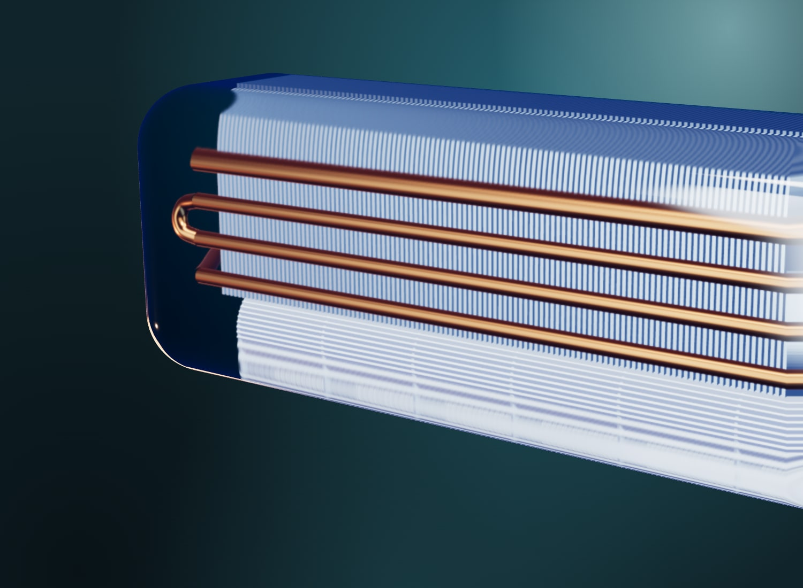

Ekskluzivni distributer i serviser nemačkog proizvođača STULZ od oktobra 2008. Projektujemo i izvodimo rashladne sisteme i toplotne pumpe.
Pozovite 011 289 4817
Toplotna pumpa sa gasnim motorom i postrojenje sa tri čilera i bezuljnim twin-turbo TURBOCOR kompresorima.
Od oktobra 2008. ekskluzivni smo distributer i serviser nemačkog proizvođača STULZ.